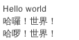

如果一個應用程式在設計時，可以在不修改應用程式的情況下，根據不同的使用者直接採用不同的語言、數字格式、日期格式等，這樣的設計考量稱為國際化（internationalization），簡稱i18n（因為internationalization有18個字母）。
國際化的重要觀念之一是地區（Locale）資訊，地區資訊代表了特定的地理、政治或文化區，地區資訊可由一個語言編碥（Language code）與可選的區域編碼（Country code）來指定，其中語言編碼是 ISO-639 定義，由兩個小寫字母代表，例如"ca"表示加拿大文（Catalan），"zh"表示中文（Chinese）。區域編碼則由兩個大寫字母表示，定義 在ISO-3166，例如IT表示義大利（Italy）、TW表示台灣（Taiwan）。
Rails中地區（Locale）資訊可使用字串設定，若要同時指定語言與區域，慣例上使用-區隔，例如"zh-TW"，應用程式預設的地區設定可用I18n.default_locale取得，如果沒有作任何設定，預設是"en"，可設定config/application.rb中的config.i18n.default_locale選項來指定。例如：
config.i18n.default_locale = "zh-TW"
應用程式採用的地區資訊由I18n.locale決定，預設值與I18n.default_locale相同，也就是"en"。
地區資訊要搭配翻譯詞彙檔來使用，預設翻譯詞彙檔的載入路徑為config/locales，例如應用程式預設會有個en.yml如下：
# Sample localization file for English. Add more files in this directory for other locales. # See https://github.com/svenfuchs/rails-i18n/tree/master/rails%2Flocale for starting points. en: hello: "Hello world"
舉例來說，如果要在畫面上呈現多國語言，可以如下使用I18n.t方法指定字串或Symbol：
<%=t :hello %>
如果I18n.locale的值是"en"，那麼就會尋找en.yml中hello:的對應伺彙，假設你有個zh-TW.yml：
zh-TW: hello: "哈囉！世界！"
如果你設定I18n.locale為"zh-TW"，那麼就會尋找zh-TW.yml中hello:對應詞彙。
其實yml主檔名無關緊要，主要是yml第一層要對應地區設定，才有辦法找到對應詞彙。如果找不到對應詞彙，那就會直接使用指定的Symbol，例如:hello就顯示Hello，如果是:hello_world就會顯示Hello World，如果想指定沒有對應詞彙時的預設詞彙，可以使用:default：
<%= t :hello, :default => "Hello!" %>
:default也可以設定尋找順序。例如找不到:hello就尋找:hi，要不然就使用最後指定的文字：
<%= t :hello, :default => [:hi, "Hello!"] %>
I18n.t方法可以直接指定:locale選項。例如：
<%=t :hello, :locale => "en" %><br>
<%=t :hello, :locale => "zh-TW"%><br>
<%=t :hello, :locale => "zh-GB" %><br>
如果也存在著"zh-GB"對應翻譯詞彙，這會顯示如下的結果：

en:
hello: "Hello %{name}"
en:
cc:
openhome:
hello: "Hello World"
zh-TW:
略...
time: am: 上午 formats: default: ! '%Y年%b%d日 %A %H:%M:%S %Z' long: ! '%Y年%b%d日 %H:%M' short: ! '%b%d日 %H:%M' pm: 下午
zh-TW:
略...
errors:
format: ! '%{attribute} %{message}'
messages:
accepted: 必須是可被接受的
blank: 不能是空白字元
confirmation: 不符合確認值
empty: 不能留空
equal_to: 必須等於 %{count}
even: 必須是偶數
exclusion: 是被保留的關鍵字
greater_than: 必須大於 %{count}
greater_than_or_equal_to: 必須大於或等於 %{count}
inclusion: 沒有包含在列表中
invalid: 是無效的
less_than: 必須小於 %{count}
less_than_or_equal_to: 必須小於或等於 %{count}
not_a_number: 不是數字
not_an_integer: 必須是整數
odd: 必須是奇數
record_invalid: ! '校驗失敗: %{errors}'
taken: 已經被使用
too_long: 過長（最長是 %{count} 個字）
too_short: 過短（最短是 %{count} 個字）
wrong_length: 字數錯誤（必須是 %{count} 個字）
略..